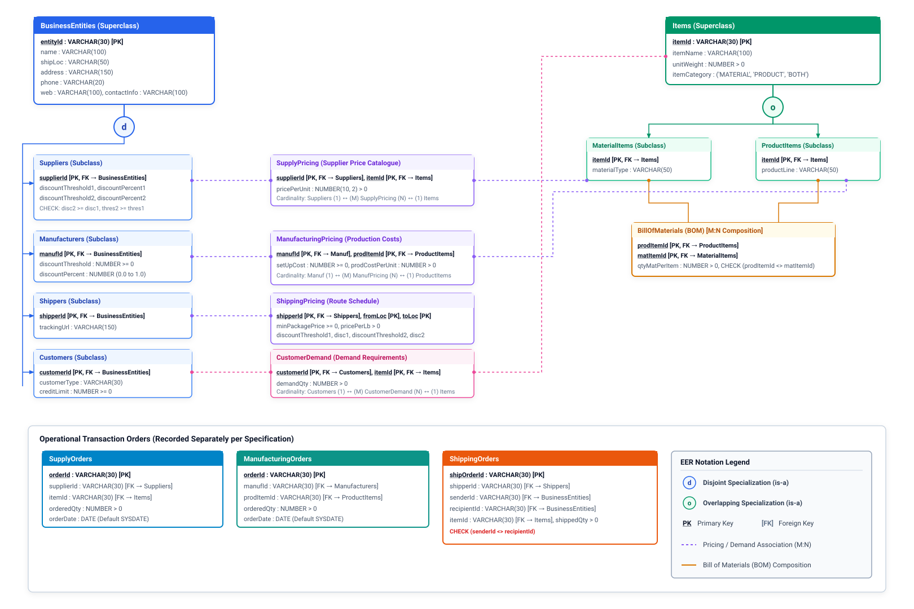

| Project Assignment: Part 1 – Conceptual Database Design | Semester: Fall 2026 |
| Student Name: Chetana Patel | Course: CS 550 / CS 450 |
| Artifact: Technical Design Document & SQL DDL Specification | Submission Requirements: ER Diagram, Integrity Constraints, Assumptions, and Relational DDL |
The objective of Part 1 is to model a collaborative, multi-tier supply chain information system composed of Suppliers, Manufacturers, Shippers, and end Customers. Per the specification, this conceptual design treats entities with full normalization and formal specialization hierarchies rather than reverse-engineering the simplified operational schema used for query testing in Part 2.
Items (Superclass): itemId (PK), itemName, unitWeight, itemCategory ('MATERIAL', 'PRODUCT', 'BOTH').MaterialItems (Subclass): itemId (PK, FK), materialType.ProductItems (Subclass): itemId (PK, FK), productLine.BusinessEntities (Superclass): entityId (PK), name, shipLoc, address, phone, web, contactInfo.Suppliers (Subclass): supplierId (PK, FK), discountThreshold1, discountPercent1, discountThreshold2, discountPercent2.Manufacturers (Subclass): manufId (PK, FK), discountThreshold, discountPercent.Customers (Subclass): customerId (PK, FK), customerType, creditLimit.Shippers (Subclass): shipperId (PK, FK), trackingUrl.SupplyOrders: orderId (PK), supplierId (FK), itemId (FK), orderedQty, orderDate.ManufacturingOrders: orderId (PK), manufId (FK), prodItemId (FK), orderedQty, orderDate.ShippingOrders: shipOrderId (PK), shipperId (FK), senderId (FK), recipientId (FK), itemId (FK), shippedQty, shipDate.| Relationship Name | Participating Entities | Cardinality | Participation | Attributes | Description |
|---|---|---|---|---|---|
| BillOfMaterials (BOM) | ProductItems ↔ MaterialItems |
M:N | Partial : Partial | qtyMatPerItem |
Recursive component composition per product unit. |
| SupplyPricing | Suppliers ↔ Items |
M:N | Partial : Partial | pricePerUnit |
Supplier catalogue price per unit. |
| ManufPricing | Manufacturers ↔ ProductItems |
M:N | Partial : Partial | setUpCost, prodCostPerUnit |
Production tariff schedule per manufacturer. |
| ShippingPricing | Shippers ↔ Route(fromLoc, toLoc) |
1:N | Partial : Partial | minPackagePrice, pricePerLb, amt1, disc1, amt2, disc2 |
Per-route logistics tariffs based on total aggregate shipment weight. |
| CustomerDemand | Customers ↔ Items |
M:N | Partial : Partial | demandQty |
Captures outstanding demand requirements. |
| PlacesSupplyOrder | Suppliers (1) ↔ SupplyOrders (N) |
1:N | Partial : Total | — | Supplier fulfillment binding. |
| PlacesManufOrder | Manufacturers (1) ↔ ManufacturingOrders (N) |
1:N | Partial : Total | — | Manufacturer assembly binding. |
| ExecutesShipment | Shippers (1) ↔ ShippingOrders (N) |
1:N | Partial : Total | — | Carrier logistics dispatch. |

Figure 1: Extended Entity-Relationship Model showing Specialization Hierarchies (Disjoint 'd' and Overlapping 'o'), Associative Pricing Tariff Schedules, and Order Streams.
To address underspecified aspects in the domain description, the following formal design assumptions were adopted:
BusinessEntities is partitioned into subclasses (Suppliers, Manufacturers, Customers, Shippers) using a disjoint specialization hierarchy. This eliminates null-value anomalies (e.g., shippers do not require manufacturing setup costs; customers do not publish route rates) while preserving shared attributes (entityId, shipLoc, address, phone, web, contactInfo) in the parent table.Items is partitioned using an overlapping hierarchy into MaterialItems and ProductItems with category tag 'BOTH', permitting an assembled sub-component to act simultaneously as a finished product of one production line and a raw input for another.orderId, shipOrderId) and timestamps (orderDate, shipDate) are introduced to support multiple repeat orders between the same entities over time.
CHECK (senderId <> recipientId): Enforces that an entity cannot execute a billable shipment to itself.CHECK (prodItemId <> matItemId): Prohibits immediate recursive loops in the Bill of Materials where a product is composed directly of itself.amt2 >= amt1), and marginal discount rate 2 must be greater than or equal to rate 1 (disc2 >= disc1), bounded within [0.0000, 1.0000].
CHECK (> 0) or CHECK (>= 0).
Items(itemId, itemName, unitWeight, itemCategory)MaterialItems(itemId, materialType) — FK: itemId → ItemsProductItems(itemId, productLine) — FK: itemId → ItemsBusinessEntities(entityId, name, shipLoc, address, phone, web, contactInfo)Suppliers(supplierId, discountThreshold1, discountPercent1, discountThreshold2, discountPercent2) — FK: supplierId → BusinessEntitiesManufacturers(manufId, discountThreshold, discountPercent) — FK: manufId → BusinessEntitiesCustomers(customerId, customerType, creditLimit) — FK: customerId → BusinessEntitiesShippers(shipperId, trackingUrl) — FK: shipperId → BusinessEntitiesBillOfMaterials(prodItemId, matItemId, qtyMatPerItem) — FKs: prodItemId → ProductItems, matItemId → MaterialItemsSupplyPricing(supplierId, itemId, pricePerUnit) — FKs: supplierId → Suppliers, itemId → ItemsManufacturingPricing(manufId, prodItemId, setUpCost, prodCostPerUnit) — FKs: manufId → Manufacturers, prodItemId → ProductItemsShippingPricing(shipperId, fromLoc, toLoc, minPackagePrice, pricePerLb, discountThreshold1, discountPercent1, discountThreshold2, discountPercent2) — FK: shipperId → ShippersCustomerDemand(customerId, itemId, demandQty) — FKs: customerId → Customers, itemId → ItemsSupplyOrders(orderId, supplierId, itemId, orderedQty, orderDate) — FKs: supplierId → Suppliers, itemId → ItemsManufacturingOrders(orderId, manufId, prodItemId, orderedQty, orderDate) — FKs: manufId → Manufacturers, prodItemId → ProductItemsShippingOrders(shipOrderId, shipperId, senderId, recipientId, itemId, shippedQty, shipDate) — FKs: shipperId → Shippers, senderId → BusinessEntities, recipientId → BusinessEntities, itemId → ItemsThe following SQL statements implement the relational schema in Oracle SQL / ANSI SQL DDL (extracted from part1_create_tables.sql):
-- 1. SUPERCLASS: ITEMS
CREATE TABLE Items (
itemId VARCHAR2(30) NOT NULL,
itemName VARCHAR2(100) NOT NULL,
unitWeight NUMBER(10, 2) NOT NULL,
itemCategory VARCHAR2(20) NOT NULL,
CONSTRAINT PK_Items PRIMARY KEY (itemId),
CONSTRAINT CHK_Items_Weight CHECK (unitWeight > 0),
CONSTRAINT CHK_Items_Category CHECK (itemCategory IN ('MATERIAL', 'PRODUCT', 'BOTH'))
);
-- 2. SUBCLASSES: MATERIAL & PRODUCT ITEMS
CREATE TABLE MaterialItems (
itemId VARCHAR2(30) NOT NULL,
materialType VARCHAR2(50),
CONSTRAINT PK_MaterialItems PRIMARY KEY (itemId),
CONSTRAINT FK_MaterialItems_Items FOREIGN KEY (itemId)
REFERENCES Items(itemId) ON DELETE CASCADE
);
CREATE TABLE ProductItems (
itemId VARCHAR2(30) NOT NULL,
productLine VARCHAR2(50),
CONSTRAINT PK_ProductItems PRIMARY KEY (itemId),
CONSTRAINT FK_ProductItems_Items FOREIGN KEY (itemId)
REFERENCES Items(itemId) ON DELETE CASCADE
);
-- 3. SUPERCLASS: BUSINESS ENTITIES
CREATE TABLE BusinessEntities (
entityId VARCHAR2(30) NOT NULL,
name VARCHAR2(100) NOT NULL,
shipLoc VARCHAR2(50) NOT NULL,
address VARCHAR2(150) NOT NULL,
phone VARCHAR2(20) NOT NULL,
web VARCHAR2(100),
contactInfo VARCHAR2(100) NOT NULL,
CONSTRAINT PK_BusinessEntities PRIMARY KEY (entityId),
CONSTRAINT CHK_BE_Phone CHECK (LENGTH(TRIM(phone)) >= 7)
);
-- 4. SUBCLASSES: SUPPLIERS, MANUFACTURERS, CUSTOMERS, SHIPPERS
CREATE TABLE Suppliers (
supplierId VARCHAR2(30) NOT NULL,
discountThreshold1 NUMBER(12, 2) DEFAULT 0.00 NOT NULL,
discountPercent1 NUMBER(5, 4) DEFAULT 0.0000 NOT NULL,
discountThreshold2 NUMBER(12, 2) DEFAULT 0.00 NOT NULL,
discountPercent2 NUMBER(5, 4) DEFAULT 0.0000 NOT NULL,
CONSTRAINT PK_Suppliers PRIMARY KEY (supplierId),
CONSTRAINT FK_Suppliers_BE FOREIGN KEY (supplierId)
REFERENCES BusinessEntities(entityId) ON DELETE CASCADE,
CONSTRAINT CHK_Sup_Disc1 CHECK (discountPercent1 >= 0.0000 AND discountPercent1 <= 1.0000),
CONSTRAINT CHK_Sup_Disc2 CHECK (discountPercent2 >= 0.0000 AND discountPercent2 <= 1.0000),
CONSTRAINT CHK_Sup_Thresholds CHECK (discountThreshold1 >= 0 AND discountThreshold2 >= discountThreshold1),
CONSTRAINT CHK_Sup_DiscRate CHECK (discountPercent2 >= discountPercent1)
);
CREATE TABLE Manufacturers (
manufId VARCHAR2(30) NOT NULL,
discountThreshold NUMBER(12, 2) DEFAULT 0.00 NOT NULL,
discountPercent NUMBER(5, 4) DEFAULT 0.0000 NOT NULL,
CONSTRAINT PK_Manufacturers PRIMARY KEY (manufId),
CONSTRAINT FK_Manufacturers_BE FOREIGN KEY (manufId)
REFERENCES BusinessEntities(entityId) ON DELETE CASCADE,
CONSTRAINT CHK_Manuf_DiscPercent CHECK (discountPercent >= 0.0000 AND discountPercent <= 1.0000),
CONSTRAINT CHK_Manuf_DiscThreshold CHECK (discountThreshold >= 0)
);
CREATE TABLE Customers (
customerId VARCHAR2(30) NOT NULL,
customerType VARCHAR2(30) DEFAULT 'STANDARD' NOT NULL,
creditLimit NUMBER(12, 2) DEFAULT 10000.00 NOT NULL,
CONSTRAINT PK_Customers PRIMARY KEY (customerId),
CONSTRAINT FK_Customers_BE FOREIGN KEY (customerId)
REFERENCES BusinessEntities(entityId) ON DELETE CASCADE,
CONSTRAINT CHK_Cust_CreditLimit CHECK (creditLimit >= 0)
);
CREATE TABLE Shippers (
shipperId VARCHAR2(30) NOT NULL,
trackingUrl VARCHAR2(150),
CONSTRAINT PK_Shippers PRIMARY KEY (shipperId),
CONSTRAINT FK_Shippers_BE FOREIGN KEY (shipperId)
REFERENCES BusinessEntities(entityId) ON DELETE CASCADE
);
-- 5. BILL OF MATERIALS (BOM)
CREATE TABLE BillOfMaterials (
prodItemId VARCHAR2(30) NOT NULL,
matItemId VARCHAR2(30) NOT NULL,
qtyMatPerItem NUMBER(10) NOT NULL,
CONSTRAINT PK_BillOfMaterials PRIMARY KEY (prodItemId, matItemId),
CONSTRAINT FK_BOM_Product FOREIGN KEY (prodItemId) REFERENCES ProductItems(itemId) ON DELETE CASCADE,
CONSTRAINT FK_BOM_Material FOREIGN KEY (matItemId) REFERENCES MaterialItems(itemId) ON DELETE CASCADE,
CONSTRAINT CHK_BOM_Qty CHECK (qtyMatPerItem > 0),
CONSTRAINT CHK_BOM_NoSelfLoop CHECK (prodItemId <> matItemId)
);
-- 6. PRICING SCHEDULES
CREATE TABLE SupplyPricing (
supplierId VARCHAR2(30) NOT NULL,
itemId VARCHAR2(30) NOT NULL,
pricePerUnit NUMBER(10, 2) NOT NULL,
CONSTRAINT PK_SupplyPricing PRIMARY KEY (supplierId, itemId),
CONSTRAINT FK_SupplyPricing_Supplier FOREIGN KEY (supplierId) REFERENCES Suppliers(supplierId) ON DELETE CASCADE,
CONSTRAINT FK_SupplyPricing_Item FOREIGN KEY (itemId) REFERENCES Items(itemId) ON DELETE CASCADE,
CONSTRAINT CHK_Supply_PPU CHECK (pricePerUnit > 0)
);
CREATE TABLE ManufacturingPricing (
manufId VARCHAR2(30) NOT NULL,
prodItemId VARCHAR2(30) NOT NULL,
setUpCost NUMBER(10, 2) DEFAULT 0.00 NOT NULL,
prodCostPerUnit NUMBER(10, 2) NOT NULL,
CONSTRAINT PK_ManufPricing PRIMARY KEY (manufId, prodItemId),
CONSTRAINT FK_ManufPricing_Manuf FOREIGN KEY (manufId) REFERENCES Manufacturers(manufId) ON DELETE CASCADE,
CONSTRAINT FK_ManufPricing_Product FOREIGN KEY (prodItemId) REFERENCES ProductItems(itemId) ON DELETE CASCADE,
CONSTRAINT CHK_Manuf_SetUpCost CHECK (setUpCost >= 0),
CONSTRAINT CHK_Manuf_ProdCost CHECK (prodCostPerUnit > 0)
);
CREATE TABLE ShippingPricing (
shipperId VARCHAR2(30) NOT NULL,
fromLoc VARCHAR2(50) NOT NULL,
toLoc VARCHAR2(50) NOT NULL,
minPackagePrice NUMBER(10, 2) DEFAULT 0.00 NOT NULL,
pricePerLb NUMBER(10, 2) NOT NULL,
discountThreshold1 NUMBER(12, 2) DEFAULT 0.00 NOT NULL,
discountPercent1 NUMBER(5, 4) DEFAULT 0.0000 NOT NULL,
discountThreshold2 NUMBER(12, 2) DEFAULT 0.00 NOT NULL,
discountPercent2 NUMBER(5, 4) DEFAULT 0.0000 NOT NULL,
CONSTRAINT PK_ShippingPricing PRIMARY KEY (shipperId, fromLoc, toLoc),
CONSTRAINT FK_ShippingPricing_Shipper FOREIGN KEY (shipperId) REFERENCES Shippers(shipperId) ON DELETE CASCADE,
CONSTRAINT CHK_Ship_MinPrice CHECK (minPackagePrice >= 0),
CONSTRAINT CHK_Ship_PricePerLb CHECK (pricePerLb > 0),
CONSTRAINT CHK_Ship_Disc1 CHECK (discountPercent1 >= 0.0000 AND discountPercent1 <= 1.0000),
CONSTRAINT CHK_Ship_Disc2 CHECK (discountPercent2 >= 0.0000 AND discountPercent2 <= 1.0000),
CONSTRAINT CHK_Ship_Thresholds CHECK (discountThreshold1 >= 0 AND discountThreshold2 >= discountThreshold1),
CONSTRAINT CHK_Ship_DiscRate CHECK (discountPercent2 >= discountPercent1)
);
-- 7. CUSTOMER DEMAND
CREATE TABLE CustomerDemand (
customerId VARCHAR2(30) NOT NULL,
itemId VARCHAR2(30) NOT NULL,
demandQty NUMBER(10) NOT NULL,
CONSTRAINT PK_CustomerDemand PRIMARY KEY (customerId, itemId),
CONSTRAINT FK_CustomerDemand_Cust FOREIGN KEY (customerId) REFERENCES Customers(customerId) ON DELETE CASCADE,
CONSTRAINT FK_CustomerDemand_Item FOREIGN KEY (itemId) REFERENCES Items(itemId) ON DELETE CASCADE,
CONSTRAINT CHK_CustDemand_Qty CHECK (demandQty > 0)
);
-- 8. INDEPENDENT ORDER TRANSACTIONS
CREATE TABLE SupplyOrders (
orderId VARCHAR2(30) NOT NULL,
supplierId VARCHAR2(30) NOT NULL,
itemId VARCHAR2(30) NOT NULL,
orderedQty NUMBER(10) NOT NULL,
orderDate DATE DEFAULT SYSDATE NOT NULL,
CONSTRAINT PK_SupplyOrders PRIMARY KEY (orderId),
CONSTRAINT UQ_SupplyOrders_Entry UNIQUE (supplierId, itemId, orderId),
CONSTRAINT FK_SupplyOrders_Supplier FOREIGN KEY (supplierId) REFERENCES Suppliers(supplierId) ON DELETE CASCADE,
CONSTRAINT FK_SupplyOrders_Item FOREIGN KEY (itemId) REFERENCES Items(itemId) ON DELETE CASCADE,
CONSTRAINT CHK_SupplyOrders_Qty CHECK (orderedQty > 0)
);
CREATE TABLE ManufacturingOrders (
orderId VARCHAR2(30) NOT NULL,
manufId VARCHAR2(30) NOT NULL,
prodItemId VARCHAR2(30) NOT NULL,
orderedQty NUMBER(10) NOT NULL,
orderDate DATE DEFAULT SYSDATE NOT NULL,
CONSTRAINT PK_ManufacturingOrders PRIMARY KEY (orderId),
CONSTRAINT UQ_ManufOrders_Entry UNIQUE (manufId, prodItemId, orderId),
CONSTRAINT FK_ManufOrders_Manuf FOREIGN KEY (manufId) REFERENCES Manufacturers(manufId) ON DELETE CASCADE,
CONSTRAINT FK_ManufOrders_Product FOREIGN KEY (prodItemId) REFERENCES ProductItems(itemId) ON DELETE CASCADE,
CONSTRAINT CHK_ManufOrders_Qty CHECK (orderedQty > 0)
);
CREATE TABLE ShippingOrders (
shipOrderId VARCHAR2(30) NOT NULL,
shipperId VARCHAR2(30) NOT NULL,
senderId VARCHAR2(30) NOT NULL,
recipientId VARCHAR2(30) NOT NULL,
itemId VARCHAR2(30) NOT NULL,
shippedQty NUMBER(10) NOT NULL,
shipDate DATE DEFAULT SYSDATE NOT NULL,
CONSTRAINT PK_ShippingOrders PRIMARY KEY (shipOrderId),
CONSTRAINT FK_ShipOrders_Shipper FOREIGN KEY (shipperId) REFERENCES Shippers(shipperId) ON DELETE CASCADE,
CONSTRAINT FK_ShipOrders_Sender FOREIGN KEY (senderId) REFERENCES BusinessEntities(entityId) ON DELETE CASCADE,
CONSTRAINT FK_ShipOrders_Recipient FOREIGN KEY (recipientId) REFERENCES BusinessEntities(entityId) ON DELETE CASCADE,
CONSTRAINT FK_ShipOrders_Item FOREIGN KEY (itemId) REFERENCES Items(itemId) ON DELETE CASCADE,
CONSTRAINT CHK_ShipOrders_Qty CHECK (shippedQty > 0),
CONSTRAINT CHK_ShipOrders_NoSelfShip CHECK (senderId <> recipientId)
);